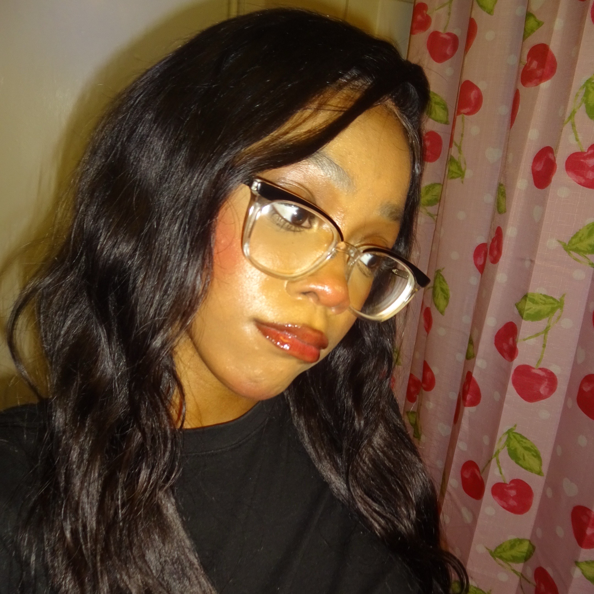
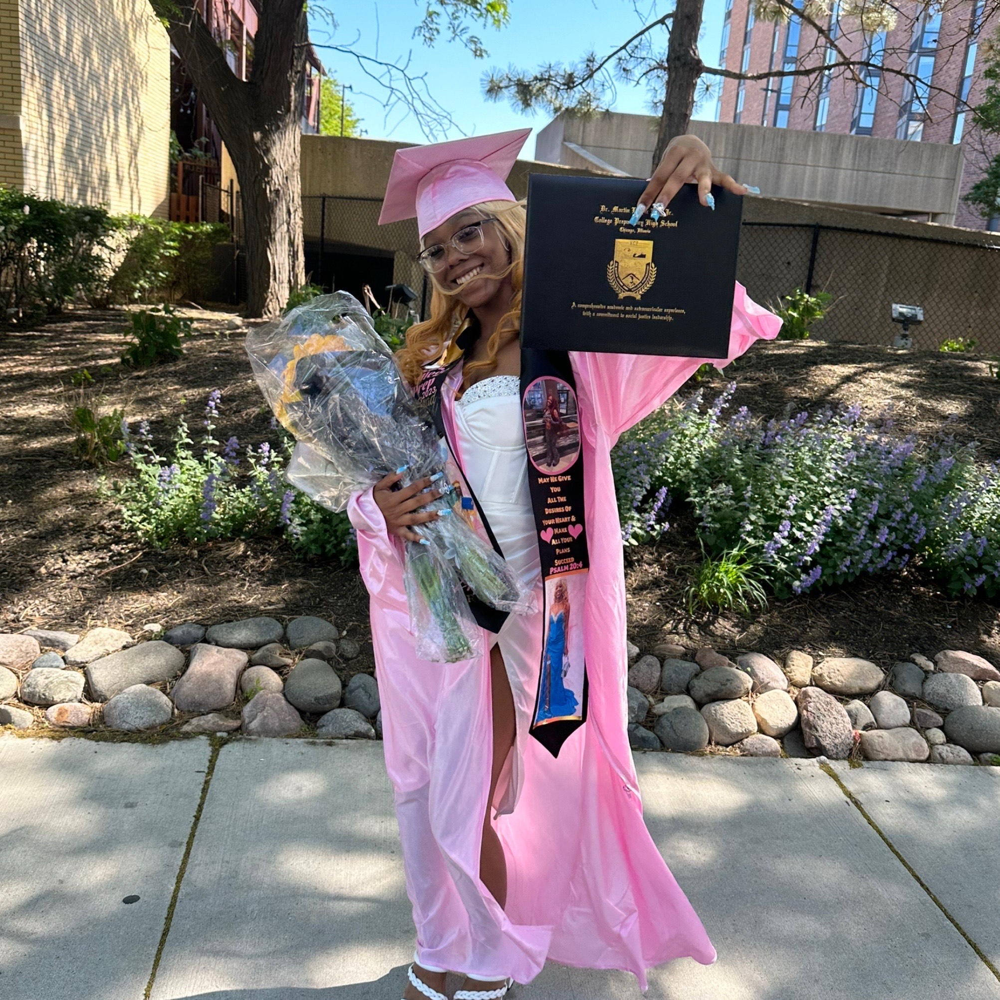
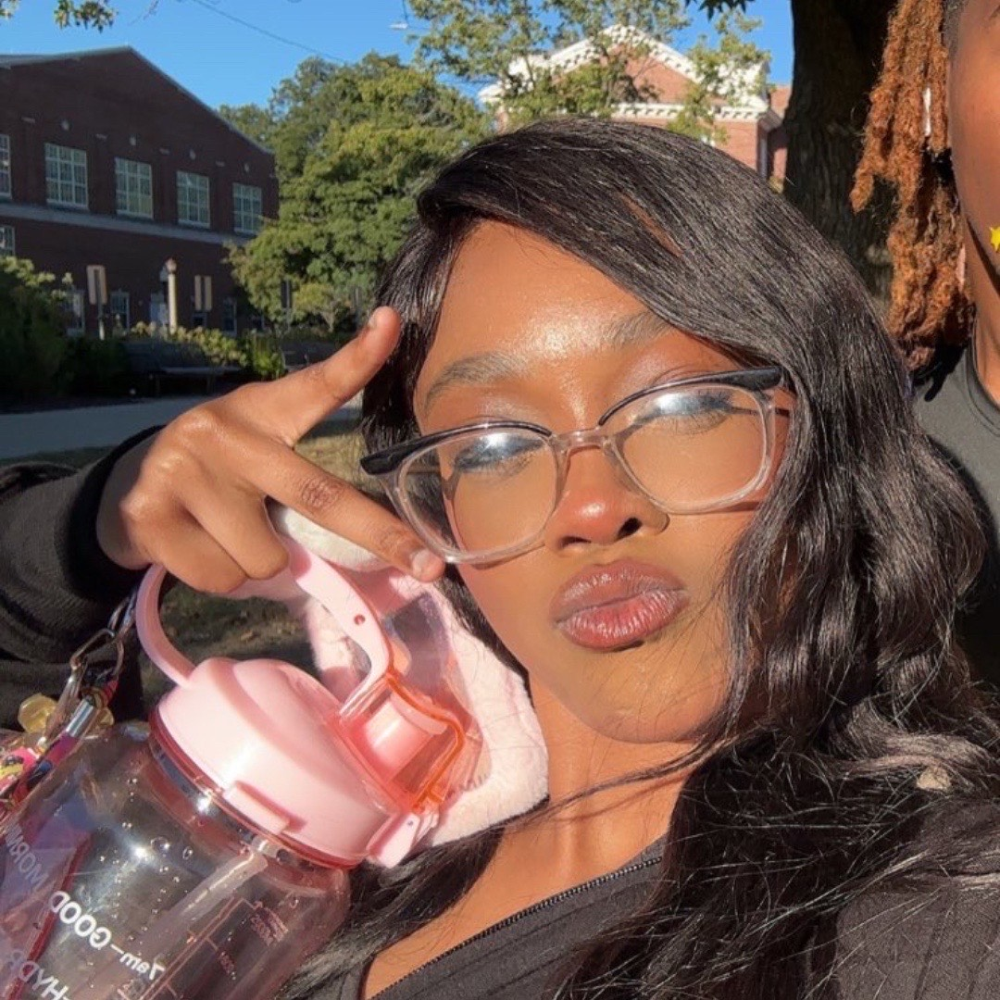

As I said before my name is Shaniya Reed! and I am a sophmore at illinois State University majoring in game design under our creative technologies progam. I have alywas been a very creative and imaginative person ever since a child. I knew from a young age a job where I wasn't able to be creative wasn't a job for me. I really got into my creative side when I was around 15 because thats when I started wearing makeup and makeup to me is an art, it is a talent and it was something I was very good at when I first started. I grew up around games my family loves games be it a party game or a first person shooter, Gaming is what really shaped me as a person today. There are so many games, streamers, game devlopers etc. That I could give credit to for the reason that I am a game design major today allowing me to embrace what I love and share my ideas with the world. Most of my work emphasizes on mechanics and storyline, I'm also very interested in first/third person shooters and life simulation but I am open to working on any genre. I hope you are interested in my creativity and what I may offer.


